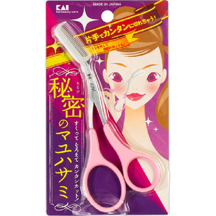

返回列表
产品名称：クシ付きマユハサミ ピンク

貝印 クシ付きマユハサミ ピンク ＿
メーカー 貝印
JANコード 4901601282719
商品の特徴
片手でカンタンに切れちゃう！
クシを外して細部のカットも！
すくって そろえて カンタンカット！秘密のマユハサミ
成分・分量
刃部：ステンレス刃物鋼
ハンドル：ABS樹脂
クシ：ポリアセタ-ル
用法及び用量
・乳幼児の手が届かない安全な場所に保管してください。
・クシを着脱するときは刃に触れないようにご注意ください。
・使用後は柔らかい布か、ティッシュペーパーなどで手汗や汚れなどをふきとり、いつも清潔な状態でお使いください。水気は特によくふきとってください。